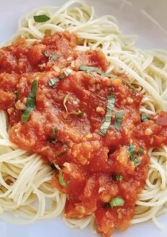

Pasta Pomodoro

Description
Years ago, an Italian restaurant served a dish called capellini pomodoro which I ordered often,
sometimes adding grilled chicken or shrimp to the pasta. This is my own quick version.
Bring a large pot of lightly salted water to a boil. Fill a large bowl with ice and cold water.
Ingredients
- Tomato
- Pasta
- Garlic
- Peppar
- Onion
Steps
- Bring a large pot of lightly salted water to a boil. Fill a large bowl with ice and cold water.
- Score a shallow "x" in the bottom of the tomatoes. Add tomatoes to the boiling water and cook uncovered
until skin starts to peel off, about 1 minute. Drain in a colander and immediately immerse in ice water
for several minutes to stop the cooking process. Peel tomatoes.
- Transfer peeled tomatoes to a food mill, and process until smooth.
- Meanwhile, bring a large pot of lightly salted water to a boil. Cook angel hair pasta in the boiling water,
stirring occasionally, until tender yet firm to the bite, 4 to 5 minutes. Drain, saving 1/4 cup of the pasta
water for the sauce.